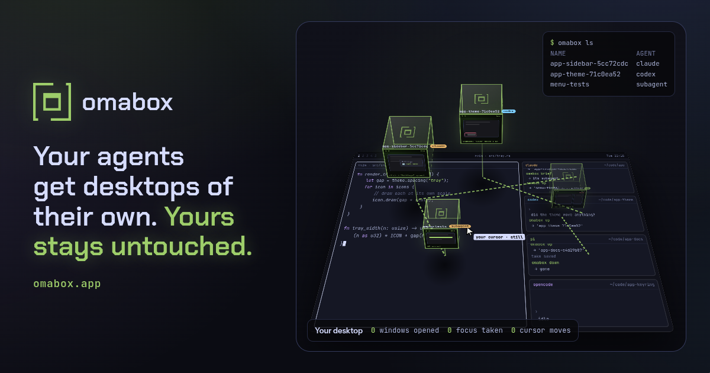

<style>
/* /uses: what people do with a box besides testing. Each use: a small picture of it (as the home
   page's Uses cards have), what it's for, the real commands, and what to watch out for. */
.uidx { display: grid; grid-template-columns: repeat(3, minmax(0, 1fr)); gap: 14px; margin-top: 44px; align-items: start; }
.uidx > div { border-radius: 16px; border: 1px solid var(--line-2); background: var(--s1); padding: 18px 20px; display: grid; gap: 10px; align-content: start; box-shadow: 0 24px 50px -28px rgb(0 0 0 / .8); }
.uidx b { font: 500 11.5px/1.4 var(--mono); letter-spacing: .14em; text-transform: uppercase; color: var(--muted); }
.uidx ul { list-style: none; margin: 0; padding: 0; display: grid; gap: 6px; }
.uidx a { color: var(--ink); text-decoration: none; font: 600 16px/1.3 var(--display); letter-spacing: .01em; }
.uidx a:hover { color: var(--box); }
@media (max-width: 860px) { .uidx { grid-template-columns: minmax(0, 1fr); } }
.part { padding-top: 120px; }
.part > .tag { color: var(--muted); }

/* one use: the picture and what it's for on the left, the commands and the watch-outs on the right */
.u2 { display: grid; grid-template-columns: minmax(0, 1fr); gap: 14px; }
@media (min-width: 900px) { .u2 { grid-template-columns: minmax(0, .9fr) minmax(0, 1.1fr); align-items: start; } }
.u2 > div { display: grid; gap: 14px; min-width: 0; }
.u2 .card > .in { gap: 10px; }
.u2 .card ul, .watch ul { margin: 0; padding-left: 18px; display: grid; gap: 7px; color: var(--ink-2); font-size: 15px; }
.u2 .card li b, .watch li b { color: var(--ink); font-weight: 600; }
.who { font: 500 11.5px/1.4 var(--mono); letter-spacing: .12em; text-transform: uppercase; color: var(--muted); }
.watch { border-radius: 16px; border: 1px solid rgb(224 175 104 / .35); background: rgb(224 175 104 / .04); padding: 18px 20px; display: grid; gap: 10px; }
.watch .who { color: var(--amber); }
.code .c { color: var(--muted); font-style: italic; }
.u2 figure { margin: 0; }
.u2 figure img, .u2 figure video { display: block; width: 100%; height: auto; border-radius: 10px; border: 1px solid var(--line); background: var(--well); }

/* the pictures: CSS scenes, transform and opacity only, paused off screen */
.pic { position: relative; height: 190px; border-radius: 12px; border: 1px solid var(--line-2); background: var(--well); overflow: hidden; }
.pic .bx2 { position: absolute; border-radius: 6px; border: 1.5px solid rgb(158 206 106 / .7); background: radial-gradient(120% 90% at 20% 0%, #15240f, #090c08 70%); }
.pic .tl { position: absolute; left: 14px; right: 14px; bottom: 16px; height: 34px; display: grid; grid-template-columns: repeat(6, 1fr); gap: 4px; }
.pic .tl i { border-radius: 3px; background: #1a2614; border: 1px solid rgb(158 206 106 / .3); }
.pic .mk { position: absolute; bottom: 58px; font: 500 10px/1 var(--mono); color: #0b0c13; background: var(--ink); border-radius: 3px; padding: 3px 5px; white-space: nowrap; }
.pic .run { position: absolute; left: 14px; right: 14px; top: 0; bottom: 16px; animation: play 6s linear infinite; }
.pic .run::before { content: ""; position: absolute; left: 0; top: 0; bottom: 0; width: 2px; background: var(--warn); }
@keyframes play { from { transform: translateX(0); } to { transform: translateX(100%); } }
.pic .rc2 { position: absolute; right: 12px; top: 12px; font: 500 10.5px/1 var(--mono); color: var(--warn); }
.pic .lbl { position: absolute; font: 500 10.5px/1.5 var(--mono); color: var(--box); white-space: nowrap; }
.pic .lbl.m { color: var(--muted); }
.pic .glyph { position: absolute; font: 600 34px/1 var(--display); color: var(--ink); letter-spacing: -.03em; }
.pic .glyph.lo { filter: blur(.9px); opacity: .6; }
.pic .mon { position: absolute; border-radius: 4px; border: 1.5px solid rgb(158 206 106 / .7); background: #0f170c; }
.pic .mon::before { content: ""; position: absolute; inset: 0 0 auto; height: 5px; background: rgb(158 206 106 / .3); }
.pic .mon.blink { animation: gone 2.4s steps(1) infinite; }
@keyframes gone { 50% { opacity: .15; } }
.pic .bt2 { position: absolute; left: 14px; right: 14px; font: 400 11px/1.6 var(--mono); color: var(--ink-2); white-space: pre; }
.pic .bt2 .w { color: var(--warn); }
/* a web page that pages down */
.pic .pg { position: absolute; left: 16%; right: 16%; top: 24px; bottom: -40px; border-radius: 6px 6px 0 0; background: #15151a; border: 1px solid var(--line-2); overflow: hidden; }
.pic .pg i { display: block; height: 7px; margin: 11px 12px 0; border-radius: 3px; background: rgb(255 255 255 / .09); }
.pic .pg .scroll { animation: pagedown 5s steps(3) infinite; }
@keyframes pagedown { to { transform: translateY(-75px); } }
/* sound: bars from the box's speaker */
.pic .wave { position: absolute; left: 14px; right: 14px; top: 60px; height: 70px; display: flex; align-items: center; gap: 3px; }
.pic .wave i { flex: 1; height: 100%; border-radius: 2px; background: rgb(158 206 106 / .55); transform: scaleY(.15); animation: wv 1.6s ease-in-out infinite alternate; }
@keyframes wv { to { transform: scaleY(var(--h, .8)); } }
/* a contact sheet */
.pic .sheet { position: absolute; left: 14px; right: 14px; top: 14px; bottom: 14px; display: grid; grid-template-columns: repeat(5, minmax(0, 1fr)); gap: 6px; }
.pic .sheet span { position: relative; border-radius: 4px; border: 1px solid rgb(158 206 106 / .35); background: #0f170c; font: 400 9px/1 var(--mono); color: var(--muted); padding: 4px; overflow: hidden; white-space: nowrap; }
.pic .sheet span.k { color: var(--box); }
/* themes */
.pic .bars { position: absolute; left: 14px; right: 14px; top: 16px; bottom: 16px; display: grid; gap: 8px; }
.pic .bars div { border-radius: 6px; border: 1px solid var(--line-2); display: flex; align-items: center; gap: 8px; padding: 0 10px; font: 500 10.5px/1 var(--mono); }
.pic .bars i { width: 9px; height: 9px; border-radius: 50%; }
/* a box inside a box */
.pic .term { position: absolute; border-radius: 4px; background: #0b0c13; border: 1px solid var(--line-2); font: 400 10px/1.6 var(--mono); color: var(--ink-2); padding: 6px 8px; white-space: pre; overflow: hidden; }
.pic .term .p { color: var(--box); }
.pic .mag { position: absolute; inset: 0; background: radial-gradient(80% 90% at 70% 60%, rgb(255 0 255 / .16), transparent 70%); }
.ex { display: grid; gap: 6px; }
</style>
<main class="wrap">
  <section class="page">
    <div class="head">
      <p class="tag">Uses</p>
      <h1>A desktop to spare, <i>for whatever you're making.</i></h1>
      <p class="lead">Testing is where omabox started. Any job that needs a screen and shouldn't touch yours fits in a box
        too: a video of what you made, a shot at twice your monitor's pixels, a desktop with nothing of yours in it. These
        are the ones we use it for, each with the commands that do it and what to watch out for.</p>
      <p class="lead">Your agent can do every one of them. Ask it for the video, the shots or the check, and it starts the box,
        drives it and hands you the files.</p>
    </div>
    <nav class="uidx" aria-label="Uses on this page">
      <div><b>Pictures and video</b><ul>
        <li><a href="#film">Film what you made</a></li>
        <li><a href="#sound">With its sound</a></li>
        <li><a href="#sheet">Read a take, don't watch it</a></li>
        <li><a href="#hidpi">Shots at 2x, or 4K</a></li>
        <li><a href="#themes">Screenshots in any theme</a></li>
        <li><a href="#demo">A demo video, filmed in a box</a></li>
        <li><a href="#this-site">This site's pictures</a></li>
      </ul></div>
      <div><b>A desktop that isn't yours</b><ul>
        <li><a href="#clean">A clean setup, not yours</a></li>
        <li><a href="#try">Try a theme or plugin first</a></li>
        <li><a href="#monitors">Monitors you don't have</a></li>
        <li><a href="#web">A web page, off your screen</a></li>
      </ul></div>
      <div><b>Trouble, found first</b><ul>
        <li><a href="#crash">Find the crash first</a></li>
      </ul></div>
    </nav>

    <div class="part"><p class="tag">Pictures and video</p></div>

    <div class="grp" id="film" style="padding-top:28px">
      <h2>Film what you made, <i>while you keep working.</i></h2>
      <p class="lead">A demo of your app, plugin or feature, filmed in a box. Your desktop stays yours the whole time: no
        window to keep still, no notification landing mid-take, no cursor to keep out of the way. Your marks become captions,
        and the clicks and keys omabox sent are drawn in.</p>
      <div class="u2">
        <div>
          <div class="pic" aria-hidden="true" data-anim><span class="rc2">● REC</span><span class="mk" style="left:20%">open the panel</span><span class="mk" style="left:58%">scene 2</span><div class="run"></div><div class="tl"><i></i><i></i><i></i><i></i><i></i><i></i></div></div>
          <div class="card"><div class="in"><p class="who">What it's for</p>
            <ul>
              <li>A README clip, a release video, a feature for X or a talk.</li>
              <li>A take your agent scripts and films again after each change, the same every time.</li>
              <li>Marks at each scene: captions in the video, and the times to cut at.</li>
            </ul></div></div>
        </div>
        <div>
          <pre class="code"><span class="p">$</span> omabox up --stock-bar --theme tokyo-night
<span class="p">$</span> omabox record start -o demo.mp4 --glide 600ms
<span class="p">$</span> omabox record mark "open the panel"
<span class="p">$</span> omabox keys --wait super+space
<span class="p">$</span> omabox record hold 2s
<span class="p">$</span> omabox record mark "scene 2"
<span class="p">$</span> omabox click --window app 120 40
<span class="p">$</span> omabox record stop --show-input --captions --cut-idle</pre>
          <p class="caption"><code>--glide</code> moves the pointer there in that time, so the viewer sees it travel.
            <code>--show-input</code> draws a ring under the pointer, a ripple on each click and the keys at the bottom;
            <code>--captions</code> puts the marks at the top; <code>--cut-idle</code> cuts every still stretch to a second.
            <code>stop</code> also writes <code>demo.vtt</code> and <code>demo.marks.tsv</code> beside the video.</p>
          <div class="watch"><p class="who">Watch out for</p>
            <ul>
              <li><b>Time with <code>record hold</code>, not <code>sleep</code>.</b> A script's sleeps run longer than they
                say, and a slow box shortens the pause the viewer sees. <code>record hold 2s</code> is two seconds of
                video.</li>
              <li><b>Only omabox's own input is drawn.</b> An app moving its own windows is not input.</li>
              <li><b>One recording a box at a time.</b> <code>record status</code> says if one runs. It needs wf-recorder
                and ffmpeg; both run in the box.</li>
              <li><b>What the box shows is in the video.</b> A bar copied from your desktop, your theme's wallpaper: start
                with <code>--stock-bar</code> and a stock theme, or <a href="#clean">a clean box</a>.</li>
            </ul></div>
        </div>
      </div>
    </div>

    <div class="grp" id="sound">
      <h2>With its sound, <i>and nobody hears it.</i></h2>
      <p class="lead">A box started with <code>--audio</code> has its own PipeWire: a speaker nobody hears and a silent
        microphone. Your app plays into it, and <code>record --audio</code> puts that sound in the video, in step with the
        picture. Your own speakers stay quiet.</p>
      <div class="u2">
        <div>
          <div class="pic" aria-hidden="true" data-anim><span class="lbl" style="left:14px;top:14px">omabox-speaker</span><span class="lbl m" style="right:14px;top:14px">a speaker nobody hears</span><div class="wave"><i style="--h:.5"></i><i style="--h:.9;animation-delay:-.2s"></i><i style="--h:.6;animation-delay:-.5s"></i><i style="--h:1;animation-delay:-.1s"></i><i style="--h:.7;animation-delay:-.7s"></i><i style="--h:.4;animation-delay:-.3s"></i><i style="--h:.85;animation-delay:-.9s"></i><i style="--h:.6;animation-delay:-.4s"></i><i style="--h:.95;animation-delay:-.6s"></i><i style="--h:.5;animation-delay:-1s"></i><i style="--h:.75;animation-delay:-.15s"></i><i style="--h:.45;animation-delay:-.8s"></i><i style="--h:.9;animation-delay:-.35s"></i><i style="--h:.6;animation-delay:-1.2s"></i><i style="--h:.8;animation-delay:-.55s"></i><i style="--h:.4;animation-delay:-.25s"></i></div><span class="lbl m" style="left:14px;bottom:14px">record --audio · AAC in the MP4</span></div>
          <div class="card"><div class="in"><p class="who">What it's for</p>
            <ul>
              <li>A video of a music player, a notification sound, a game.</li>
              <li>Proof a sound played at all: <code>omabox audio</code> says when the box made one, and how loud.</li>
            </ul></div></div>
        </div>
        <div>
          <pre class="code"><span class="p">$</span> omabox up --audio
<span class="p">$</span> omabox record start --audio -o player.mp4
<span class="p">$</span> omabox click --window player 40 300
<span class="p">$</span> omabox record hold 5s
<span class="p">$</span> omabox record stop
<span class="p">$</span> omabox audio 3s          <span class="c"># did it make a sound, and when</span></pre>
          <div class="watch"><p class="who">Watch out for</p>
            <ul>
              <li><b>Without <code>--audio</code> a box has no sound at all,</b> and <code>record --audio</code> needs a box
                started with it.</li>
              <li><b>The microphone is silent.</b> An app that records you records nothing.</li>
              <li><b>Nothing reaches your audio:</b> a box has no <code>/dev/snd</code> and never your audio server. A sound
                starts within about 15 ms of the picture; a player is slower to start than a terminal to draw.</li>
            </ul></div>
        </div>
      </div>
    </div>

    <div class="grp" id="sheet">
      <h2>Read a take, <i>don't watch it.</i></h2>
      <p class="lead">A contact sheet is a video as one image: frames from start to end, each labelled with its time and the
        marks since the frame before. An agent reads it in place of watching the video, finds the scene that went wrong and
        fixes its script. You get to skim a take in a second.</p>
      <div class="u2">
        <div>
          <div class="pic" aria-hidden="true"><div class="sheet"><span>0.00s</span><span>1.40s</span><span class="k">&gt; 2.10s open</span><span>3.50s</span><span>4.90s</span><span class="k">&gt; 6.30s scene 2</span><span>7.70s</span><span>9.10s</span><span>10.5s</span><span>11.9s</span></div></div>
          <div class="card"><div class="in"><p class="who">What it's for</p>
            <ul>
              <li>Checking a take before anyone watches it.</li>
              <li>Any video at all, with <code>record sheet</code>: one made elsewhere too.</li>
              <li>A transition, frame by frame: <code>shot --burst</code> takes frames 100 ms apart and sheets them.</li>
            </ul></div></div>
        </div>
        <div>
          <pre class="code"><span class="p">$</span> omabox record stop --sheet                <span class="c"># demo.sheet.png beside the video</span>
<span class="p">$</span> omabox record sheet demo.mp4 --every 2s -o demo-sheet.png
<span class="p">$</span> omabox shot --burst 12 --sheet --after -- keys super+space</pre>
          <div class="watch"><p class="who">Watch out for</p>
            <ul>
              <li><b>A box must be up</b> for <code>record sheet</code>: ffmpeg reads the video in the box.</li>
              <li><b>15 frames by default,</b> five a row; <code>--frames N</code> or <code>--every 2s</code> for more,
                <code>--fit N</code> for the sheet's size.</li>
            </ul></div>
        </div>
      </div>
    </div>

    <div class="grp" id="hidpi">
      <h2>Shots at 2x, or 4K, <i>whatever your monitor is.</i></h2>
      <p class="lead">A box is the size and scale you ask for. At <code>--size 3840x2160,scale=2</code> it's laid out as
        1920x1080, the bar and apps their usual size in twice the pixels, so a shot is 3840x2160 and a recording is a 4K
        video. Crisp pictures for a README, a store page or a talk, from a 1080p monitor or a laptop.</p>
      <div class="u2">
        <div>
          <div class="pic" aria-hidden="true"><span class="glyph lo" style="left:24px;top:52px">Aa</span><span class="lbl m" style="left:24px;top:104px">1x</span><span class="bx2" style="left:42%;top:18px;width:52%;height:150px"></span><span class="glyph" style="left:50%;top:56px;font-size:46px">Aa</span><span class="lbl" style="left:50%;top:120px">3840x2160 · scale 2</span></div>
          <div class="card"><div class="in"><p class="who">What it's for</p>
            <ul>
              <li>One window's own pixels, covered or on another workspace too: <code>shot --window</code>.</li>
              <li>A video at the box's own pixels: a 4K box gives a 4K video.</li>
              <li>More than 2x: scale goes from 1 to 4.</li>
            </ul></div></div>
        </div>
        <div>
          <pre class="code"><span class="p">$</span> omabox up --size 3840x2160,scale=2
<span class="p">$</span> omabox run -d --wait -- ./build/app
<span class="p">$</span> omabox shot --window app -o app@2x.png
<span class="p">$</span> omabox shot --no-pointer -o desktop@2x.png
<span class="p">$</span> omabox record start -o app-4k.mp4</pre>
          <div class="watch"><p class="who">Watch out for</p>
            <ul>
              <li><b>Hyprland may round a scale</b> to whole pixels; <code>mode</code> says so.</li>
              <li><b>Clicks stay in the layout's coordinates</b> (1920x1080 here), not the shot's pixels.
                <code>click --in SHOT X Y</code> maps a shot's.</li>
              <li><b>A screen shot shows the pointer;</b> <code>--no-pointer</code> leaves it out. Window shots never have
                it.</li>
              <li><b>Twice the pixels is more GPU.</b> <code>omabox gpu</code> measures what the box costs.</li>
            </ul></div>
        </div>
      </div>
    </div>

    <div class="grp" id="themes">
      <h2>Screenshots in any theme, <i>without changing yours.</i></h2>
      <p class="lead">Your plugin's README wants a shot in each theme people use. Change the theme in the box, wait for it to
        settle, take the shot, and go on to the next. Your desktop stays on its own theme the whole time. A theme you're
        making goes in live with <code>--theme-dir</code>.</p>
      <div class="u2">
        <div>
          <div class="pic" aria-hidden="true"><div class="bars"><div style="background:#1a1b26;color:#7aa2f7"><i style="background:#9ece6a"></i>tokyo-night</div><div style="background:#1e1e2e;color:#cba6f7"><i style="background:#f38ba8"></i>catppuccin</div><div style="background:#282828;color:#d79921"><i style="background:#98971a"></i>gruvbox</div><div style="background:#2e3440;color:#88c0d0"><i style="background:#a3be8c"></i>nord</div></div></div>
          <div class="card"><div class="in"><p class="who">What it's for</p>
            <ul>
              <li>A plugin's bar widget in every theme, for its README or a catalog.</li>
              <li>A theme you're making, shot as you edit it.</li>
              <li>Omarchy's default bar (<code>--stock-bar</code>), as most people see it, not your own layout.</li>
            </ul></div></div>
        </div>
        <div>
          <pre class="code"><span class="p">$</span> omabox up --plugin ./my-widget --stock-bar --theme tokyo-night
<span class="p">$</span> for t in tokyo-night catppuccin gruvbox nord; do
    omabox run -- omarchy-theme-set $t
    omabox wait still
    omabox shot -g "0,0 1920x26" -o bar-$t.png
  done
<span class="c"># a theme you're editing, live in the box</span>
<span class="p">$</span> omabox up --theme-dir ./my-theme --theme my-theme</pre>
          <div class="watch"><p class="who">Watch out for</p>
            <ul>
              <li><b>Without <code>--stock-bar</code></b> the box copies your bar's layout, and <code>up</code> says so.</li>
              <li><b>A theme's wallpaper comes with it.</b> For a theme you also keep backgrounds of your own for, the box
                starts on yours first.</li>
              <li><b>Your fonts are in the box</b>, so a theme draws as on your desk; <code>--no-seed fonts</code> shows it
                with only the system's.</li>
            </ul></div>
        </div>
      </div>
    </div>

    <div class="grp" id="demo">
      <h2>A demo video, <i>filmed in a box.</i></h2>
      <p class="lead">omabox's own clip was filmed this way. A box played the desktop: Omarchy's stock bar, a stock theme, a
        terminal. Inside it, a second box ran, driven from that terminal the way an agent drives one. Nothing in the video
        came from a real desktop. Our videos are still made like that: the footage from a box, the titles and motion added
        after.</p>
      <div class="u2">
        <div>
          <figure><video src="media/clip.mp4" poster="media/clip-poster.webp" controls preload="none" playsinline width="1280" height="720"></video>
            <figcaption class="caption">The omabox 0.2.0 clip, 43 s: an agent testing an app on your desktop, then in a box.
              Recorded inside a box.</figcaption></figure>
        </div>
        <div>
          <pre class="code"><span class="p">$</span> omabox up --stock-bar --theme tokyo-night --no-pointer
<span class="p">$</span> omabox record start -o take.mp4 --no-pointer
<span class="p">$</span> omabox record mark "desktop"
<span class="p">$</span> omabox wait still --quiet 1500ms --timeout 4s
<span class="p">$</span> omabox record mark "terminal"
<span class="p">$</span> omabox keys super+Return
<span class="p">$</span> omabox keys -t 'echo "made in a box, not on your desktop"' Return
<span class="p">$</span> omabox record mark "launcher"
<span class="p">$</span> omabox keys --wait super+space
<span class="p">$</span> omabox record stop --sheet</pre>
          <p class="caption">A take as our video tool scripts one: a mark at each scene, so the edit knows where to cut.</p>
          <div class="watch"><p class="who">Watch out for</p>
            <ul>
              <li><b>A terminal's prompt and title show your user and host names.</b> Keep them out of frame, or shorten the
                title, before you publish.</li>
              <li><b>Your git name and email are in a box</b>, so <code>git log</code> in a shot shows them.</li>
              <li><b>Let the screen settle</b> between scenes with <code>wait still</code>, and hold with
                <code>record hold</code>.</li>
            </ul></div>
        </div>
      </div>
    </div>

    <div class="grp" id="this-site">
      <h2>This site's pictures, <i>every one.</i></h2>
      <p class="lead">Every screenshot on omabox.app was taken by omabox, in a box: the desktop, the terminal, the launcher,
        the three monitors, Dux Shell on <a href="next.html">/next</a>. So was the card a link to omabox.app shows on X and
        Discord: the home page, opened in a box at 1200x630, frames taken while its live view moves, one picked.</p>
      <div class="u2">
        <div>
          <figure>
            <figcaption class="caption">The link card, 1200x630: a box exactly that size, a browser in kiosk mode, 14
              frames 0.7 s apart.</figcaption></figure>
        </div>
        <div>
          <pre class="code"><span class="p">$</span> omabox up og-card --size 1200x630
<span class="p">$</span> omabox -b og-card run -d --wait -- chromium --kiosk --no-first-run \
    --user-data-dir=/tmp/ogc --hide-scrollbars "file://$PWD/og/card.html"
<span class="p">$</span> omabox -b og-card pointer -- move 1199 629   <span class="c"># the pointer out of the picture</span>
<span class="p">$</span> omabox -b og-card shot --burst 14 --every 700ms --sheet
<span class="p">$</span> omabox down og-card</pre>
          <div class="watch"><p class="who">Watch out for</p>
            <ul>
              <li><b>Nothing personal in a public shot:</b> no user or host names, no hardware lines from fastfetch.</li>
              <li><b>A box the size of the picture</b> beats cropping: the page lays itself out for it.</li>
              <li><b>A moving page gives a different frame each time.</b> A burst lets you pick the best one.</li>
            </ul></div>
        </div>
      </div>
    </div>

    <div class="part"><p class="tag">A desktop that isn't yours</p></div>

    <div class="grp" id="clean" style="padding-top:28px">
      <h2>A clean setup, <i>not yours.</i></h2>
      <p class="lead">A box made for pictures that must match from run to run: Omarchy's stock bar on a stock theme, the bar's
        clock frozen at "Friday 12:00", English in UTC, no pointer, no network, animations off and none of your fonts. Only
        what you're showing moves.</p>
      <div class="u2">
        <div>
          <div class="pic" aria-hidden="true"><div class="mag"></div><span class="bx2" style="left:14px;right:14px;top:14px;bottom:14px;background:none"></span><span class="lbl m" style="right:24px;top:22px">Friday 12:00 · always</span><span class="bt2" style="top:70px;left:30px;color:var(--box)">a stock Omarchy
nothing of yours in it</span></div>
          <div class="card"><div class="in"><p class="who">What it's for</p>
            <ul>
              <li>Docs and store pages that should look like a fresh install.</li>
              <li>Shots compared across runs: <code>omabox check</code> starts its boxes clean.</li>
              <li>A bug report's picture with nothing of yours in it.</li>
            </ul></div></div>
        </div>
        <div>
          <pre class="code"><span class="p">$</span> omabox up --clean --stock-bar --theme tokyo-night
<span class="c"># give back what a picture for people needs</span>
<span class="p">$</span> omabox up --clean --theme catppuccin --keep wallpaper,animations</pre>
          <div class="watch"><p class="who">Watch out for</p>
            <ul>
              <li><b>The wallpaper is magenta</b> (#ff00ff, which no theme has), so a hole in a window shows in a check.
                <code>--keep wallpaper</code> gives the theme's own back (or yours, if you keep backgrounds for that theme), and setting a theme in the box brings that theme's.</li>
              <li><b>No network</b> unless you give it back with <code>--net connected</code>.</li>
              <li><b>Clean is not anonymous.</b> A terminal's prompt still shows your user and host names, and your git
                name and email are in the box.</li>
            </ul></div>
        </div>
      </div>
    </div>

    <div class="grp" id="try">
      <h2>Try a theme or plugin <i>before your desktop gets it.</i></h2>
      <p class="lead">Someone published a theme or a bar plugin. Install it in a box first, on Omarchy's stock bar, and see
        what it does. <code>omabox down</code> deletes the box's HOME with everything it installed there.</p>
      <div class="u2">
        <div>
          <div class="pic" aria-hidden="true"><span class="bx2" style="left:14px;right:14px;top:14px;bottom:44px"></span><span class="lbl" style="left:28px;top:28px">+ their theme</span><span class="lbl" style="left:28px;top:50px">+ their plugin</span><span class="term" style="left:28px;right:28px;top:84px;height:46px"><span class="p">$</span> omabox down
gone, with all of it</span><span class="lbl m" style="left:14px;bottom:16px">your desktop: unchanged</span></div>
          <div class="card"><div class="in"><p class="who">What it's for</p>
            <ul>
              <li>Seeing a theme with your apps before you switch to it.</li>
              <li>Checking a plugin from a stranger's repo starts at all, and what it puts in the bar.</li>
            </ul></div></div>
        </div>
        <div>
          <pre class="code"><span class="p">$</span> omabox up --stock-bar --no-seed extensions
<span class="p">$</span> omabox run -- omarchy theme install https://github.com/someone/their-theme.git
<span class="p">$</span> omabox run -- omarchy plugin add https://github.com/someone/their-plugin.git --enable --yes
<span class="c"># its widget is in the box's bar a second later, no restart</span>
<span class="p">$</span> omabox shot</pre>
          <div class="watch"><p class="who">Watch out for</p>
            <ul>
              <li><b>omabox is not a security boundary.</b> A box shares your kernel, your GPU and, by default, your network,
                and what it sends out is real. For code you don't trust, start the box with <code>--net isolated</code> at
                least, use <a href="compare.html">ai-jail</a>, or a VM.</li>
              <li><b>A box sees only what you give it:</b> the repo you start it from, read-only, and nothing of your HOME's
                secrets.</li>
              <li><b><code>--no-seed extensions</code></b> starts the box with a new user's plugin settings, not yours.</li>
            </ul></div>
        </div>
      </div>
    </div>

    <div class="grp" id="monitors">
      <h2>Monitors <i>you don't have.</i></h2>
      <p class="lead">Portrait, scaled, side by side or below, as many as the job needs, each with its own bar. Plug and unplug
        them while the box runs, take one monitor's shot, or film the whole layout as one video.</p>
      <div class="u2">
        <div>
          <figure>
            <figcaption class="caption">One box, three monitors, taken with <code>omabox shot</code>.</figcaption></figure>
          <div class="card"><div class="in"><p class="who">What it's for</p>
            <ul>
              <li>A plugin or app on an ultrawide, a portrait screen or mixed scales you don't own.</li>
              <li>A video of what happens when a monitor is added: <code>record --monitor all</code> films every monitor at its
                place.</li>
            </ul></div></div>
        </div>
        <div>
          <pre class="code"><span class="p">$</span> omabox up --monitor 2560x1440,scale=1.6,below --monitor 1080x1920,1920,0
<span class="p">$</span> omabox monitor add 3440x1440,right
<span class="p">$</span> omabox monitor list
<span class="p">$</span> omabox shot --monitor HEADLESS-4 -o portrait.png
<span class="p">$</span> omabox record start --monitor all -o layout.mp4
<span class="p">$</span> omabox monitor remove HEADLESS-5     <span class="c"># the ultrawide, unplugged</span></pre>
          <div class="watch"><p class="who">Watch out for</p>
            <ul>
              <li><b>The monitors are virtual.</b> Real modes, HDR, VRR, a real hotplug and suspend don't run in a box.</li>
              <li><b>Names:</b> the main screen is HEADLESS-2, the others HEADLESS-3 and on; on NVIDIA they're WAYLAND-1,
                -2 and on. <code>monitor list</code> says which.</li>
              <li><b>A very big layout is scaled down</b> to fit H.264 (8192x4352's pixels), said when the recording
                starts.</li>
            </ul></div>
        </div>
      </div>
    </div>

    <div class="grp" id="web">
      <h2>A web page, <i>off your screen.</i></h2>
      <p class="lead">Your agent opens a site in the box's browser, pages down, reads the shots and narrows the window to a
        phone's width. No browser window lands on your desktop. This site is checked that way before every change, and its
        GPU cost is measured there.</p>
      <div class="u2">
        <div>
          <div class="pic" aria-hidden="true" data-anim><div class="pg"><div class="scroll"><i style="width:60%"></i><i></i><i style="width:80%"></i><i style="width:50%"></i><i></i><i style="width:70%"></i><i style="width:40%"></i><i></i><i style="width:65%"></i><i></i><i style="width:55%"></i><i></i><i style="width:75%"></i></div></div></div>
          <div class="card"><div class="in"><p class="who">What it's for</p>
            <ul>
              <li>Your own site or web app, looked at by your agent after each change.</li>
              <li>A page at phone width without a phone: <code>omabox mode 412x915</code>.</li>
              <li>What a page costs the GPU, idle and scrolling: <code>omabox gpu</code>.</li>
            </ul></div></div>
        </div>
        <div>
          <pre class="code"><span class="p">$</span> omabox up                 <span class="c"># from your site's repo: it's in the box, read-only</span>
<span class="p">$</span> omabox run -d --wait -- chromium --user-data-dir=/tmp/chr --no-first-run \
    --ozone-platform=wayland --app=file://$PWD/dist/index.html
<span class="p">$</span> omabox shot
<span class="p">$</span> omabox keys Page_Down
<span class="p">$</span> omabox mode 412x915
<span class="p">$</span> omabox gpu 5</pre>
          <div class="watch"><p class="who">Watch out for</p>
            <ul>
              <li><b>The box's browser starts signed out:</b> your browser profiles never reach a box. Sign in once in a box
                and <code>omabox save</code> it; <code>up --from</code> that save starts signed in.</li>
              <li><b>A box reaches the internet, your LAN and your servers</b> by default. <code>--net isolated --allow
                PORT</code> keeps it to your dev server. omabox is not a security boundary.</li>
              <li><b>Across the box boundary use 127.0.0.1</b>, not localhost.</li>
            </ul></div>
        </div>
      </div>
    </div>

    <div class="part"><p class="tag">Trouble, found first</p></div>

    <div class="grp" id="crash" style="padding-top:28px">
      <h2>Find the crash <i>before your users do.</i></h2>
      <p class="lead">Unplug a monitor again and again until your shell or plugin falls over, then read the backtrace. A
        screen going away is what a monitor in standby, a KVM switch or a dock does, and it's where shells crash. Your session
        never notices.</p>
      <div class="u2">
        <div>
          <div class="pic" aria-hidden="true" data-anim><span class="mon" style="left:14px;top:26px;width:22%;height:46px"></span><span class="mon blink" style="left:28%;top:26px;width:22%;height:46px"></span><span class="mon" style="left:53%;top:26px;width:22%;height:46px"></span><span class="mon blink" style="left:78%;top:26px;width:18%;height:46px;animation-delay:-1.2s"></span><span class="bt2" style="top:96px">a monitor gone and back, over and over
<span class="w">until something falls over</span></span></div>
          <div class="card"><div class="in"><p class="who">What it's for</p>
            <ul>
              <li>A shell or plugin that crashes when a screen goes to sleep.</li>
              <li>A compositor change, with your own Hyprland build: <code>up --hyprland PATH</code>.</li>
            </ul></div></div>
        </div>
        <div>
          <pre class="code"><span class="p">$</span> omabox up --plugin ./my-widget
<span class="p">$</span> omabox gdb --shell --watch &amp;
<span class="p">$</span> omabox output drop --cycles 50
<span class="p">$</span> omabox log gdb --crash</pre>
          <p class="caption"><code>output drop --cycles</code> stops at the first shell crash and names its report.
            <code>gdb --watch</code> waits for it and puts the backtrace in <code>omabox log gdb</code>.</p>
          <div class="watch"><p class="who">Watch out for</p>
            <ul>
              <li><b>Not in an interactive box:</b> its screens are windows on your desktop, and one dropped couldn't come
                back.</li>
              <li><b>No symbols beyond the binaries' own</b> (debuginfod is off).</li>
              <li><b>gdb traces the box's processes only,</b> never your host's.</li>
            </ul></div>
        </div>
      </div>
    </div>

    <p class="note">More than these? Tell us what you use a box for: <a href="https://github.com/diogochaves/omabox/issues">omabox's issues</a>.</p>
  </section>

<script>
/* the pictures' loops run only while on screen */
(() => {
  if (!window.IntersectionObserver) return;
  const io = new IntersectionObserver(es => es.forEach(e => e.target.classList.toggle("paused", !e.isIntersecting)));
  document.querySelectorAll("[data-anim]").forEach(el => { el.classList.add("paused"); io.observe(el); });
})();
</script>
</main>
